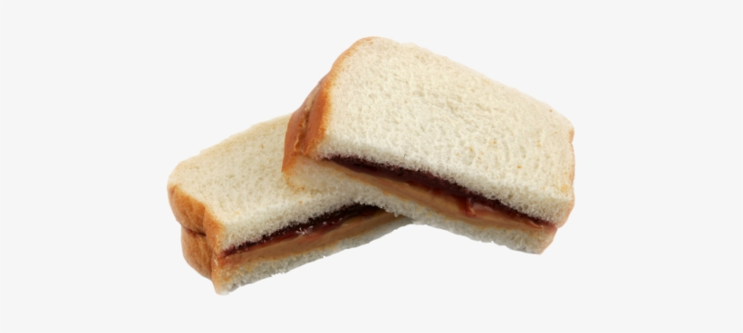

Peanut Butter and Jelly

Description
Peanut Butter and Jelly sandwiches are a classic snack for anyone. They
are easily crafted for those on the go.
Ingredients
- Butter Knife
- Peanut Butter
- 2 Slices of bread
- Jelly
Steps
- Set all Ingredients onto preparation station
- Using the Butter Knife, gather Peanut Butter and lather
it onto the bread. Use both slices of bread to spread if necessary.
- Repeat process with the jelly, but keep in mind that you may not
need as much jelly as peanut butter.
- Press lathered slices of bread together, and leave knife over the sink
in case you want to make another for later.